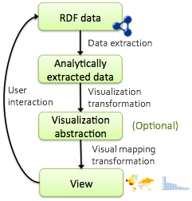
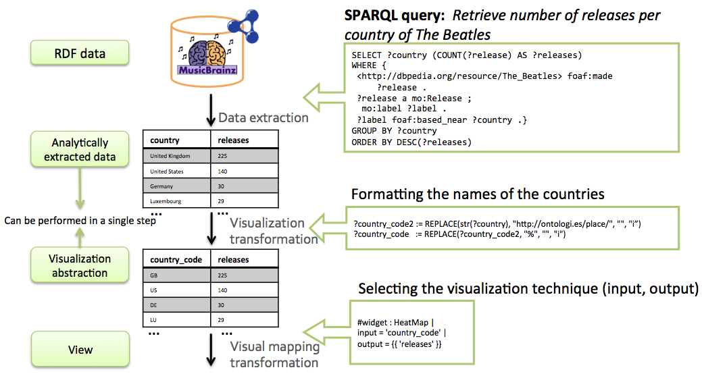
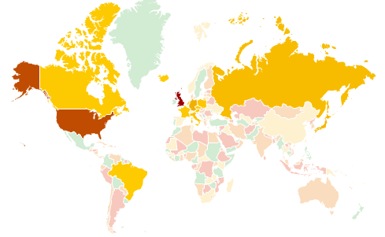

Linked Data visualization techniques aim to provide graphical representations of some information of interest within a dataset. Visualizations need to be selected that match the type of data, for example whether it be numerical data or location information. Visualizations also need to be selected that match the task that the user is trying to perform, bringing to the foreground the types of data and patterns in the data that they wish to work with.
Figure 3 illustrates the way in which raw RDF data needs to be transformed to produce visualizations. First, the data of interest is extracted from the dataset. Performing a SPARQL query can do this. Second, the data needs to be transformed in order that it can be displayed with the intended visualization methods. A simple example would be to extract a numerical value from a string so that it could then be visualized on a bar chart. Third, the data needs to be mapped to the constructs of the visualization. For example, the numerical value could be mapped to the y-axis of a bar chart. The view resulting form this process may not be a static image. It may provide ways in which the user can interact with the data, by zooming or clicking to trigger further visualizations.

Figure 3: Linked Data visualization process (partially based on [3])
An example of the Linked Data visualization process is shown in figure 4. A SPARQL query is used to extract the data of interest from the MusicBrianz dataset, in this case the number of Beatles releases per country. In the second step the string value representing the country is transformed into a country code that can be used on the visualization. In the third step, this data is passed to a heatmap visualization. The country code is used to identify an area on the map. The number of releases is mapped to the warmth of the colour of that region. The resulting heatmap is shown in figure 5.

Figure 4. Example of the Linked Data visualization process.

Figure 5: Heatmap visualization of Beatles releases.